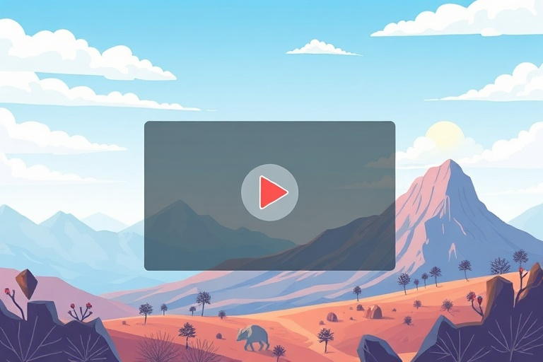

নতুনদের জন্য এআই (AI) ভিডিও তৈরির সহজ উপায়

Category: video | Language: bnবর্তমান সময়ে ভিডিও কন্টেন্ট তৈরির জনপ্রিয়তা তুঙ্গে। তবে এডিটিং বা গ্রাফিক্সের কাজ না জানলেও এখন কৃত্রিম বুদ্ধিমত্তা বা এআই-এর সাহায্যে চমৎকার ভিডিও তৈরি করা সম্ভব। আপনি যদি একজন বিগিনার বা নতুন ব্যবহারকারী হন, তবে আপনার স্মার্টফোন বা কম্পিউটার ব্যবহার করেই কয়েক মিনিটের মধ্যে পেশাদার মানের ভিডিও বানিয়ে ফেলতে পারেন। এর জন্য শুধু আপনার সৃজনশীলতা এবং সঠিক টুল ব্যবহারের জ্ঞান থাকা প্রয়োজন।
এআই ভিডিও তৈরির জন্য প্রথমেই আপনাকে একটি ভালো প্ল্যাটফর্ম বেছে নিতে হবে। ইন্টারনেটে এখন রানওয়ে (Runway), পিকা (Pika), বা ক্যানভা (Canva)-র মতো অনেক জনপ্রিয় টুল পাওয়া যায়। এর মধ্যে ক্যানভা নতুনদের জন্য বেশ সহজ কারণ এখানে ড্র্যাগ-অ্যান্ড-ড্রপ অপশন রয়েছে। এছাড়া ইনভিডিও (InVideo) বা লুমেন৫ (Lumen5) ব্যবহার করে আপনি লেখা থেকে সরাসরি ভিডিও তৈরি করতে পারেন।
এআই ভিডিও তৈরির মূল চাবিকাঠি হলো 'প্রম্পট' বা নির্দেশাবলী। আপনি ভিডিওতে ঠিক কী দেখতে চান, তা পরিষ্কারভাবে এআই-কে লিখে জানাতে হয়। যেমন, "একটি শান্ত সমুদ্রের তটে সূর্যাস্তের দৃশ্য" - এই ধরনের ছোট কিন্তু স্পষ্ট বাক্য লিখলে এআই আপনার জন্য সেই দৃশ্যটি তৈরি করে দেবে। যত বিস্তারিতভাবে আপনি আপনার ভাবনা লিখবেন, ভিডিওটি তত বেশি নিখুঁত হবে।
অনেক সময় আমরা কোনো স্থির ছবিকে ভিডিওতে রূপান্তর করতে চাই। এর জন্য 'ইমেজ-টু-ভিডিও' ফিচারটি খুব কাজের। আপনি আপনার গ্যালারি থেকে কোনো ছবি আপলোড করে সেটিকে এআই টুলের মাধ্যমে অ্যানিমেশন বা মুভমেন্ট দিতে পারেন। এটি বিশেষ করে সোশ্যাল মিডিয়া পোস্ট বা স্টোরি তৈরির জন্য খুবই কার্যকর এবং আকর্ষণীয়।
একটি ভালো ভিডিওর জন্য সাউন্ড বা অডিও খুব গুরুত্বপূর্ণ। এআই এখন কেবল ভিডিও নয়, মানুষের মতো কণ্ঠস্বর বা ভয়েসওভারও তৈরি করতে পারে। আপনি আপনার স্ক্রিপ্টটি দিলে এআই সেটি পড়ে শোনাবে। এর সাথে কপিরাইট-মুক্ত ব্যাকগ্রাউন্ড মিউজিক যোগ করলে আপনার ভিডিওটি একদম প্রফেশনাল দেখাবে।
পরিশেষে বলা যায়, এআই ভিডিও তৈরি করা এখন আর কঠিন কোনো কাজ নয়। শুরুতে হয়তো আপনার ভিডিওগুলো একদম মনের মতো হবে না, কিন্তু নিয়মিত প্র্যাকটিস করলে আপনি দ্রুত এটি শিখে যাবেন। বিভিন্ন টুল নিয়ে পরীক্ষা-নিরীক্ষা করুন এবং নিজের সৃজনশীলতাকে কাজে লাগিয়ে নতুন নতুন কন্টেন্ট তৈরি করতে শুরু করুন।